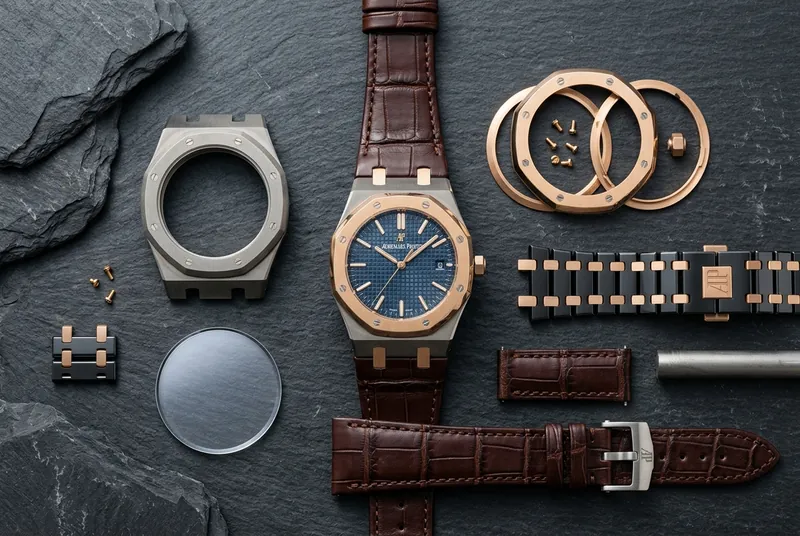
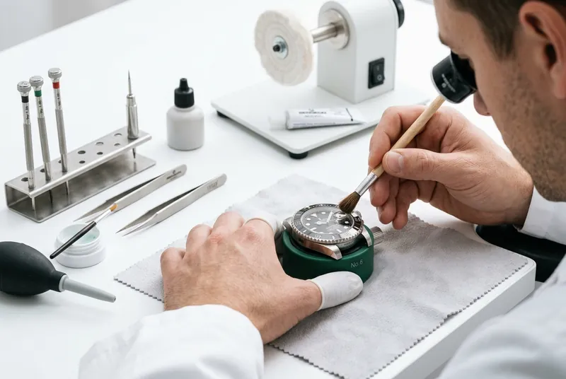
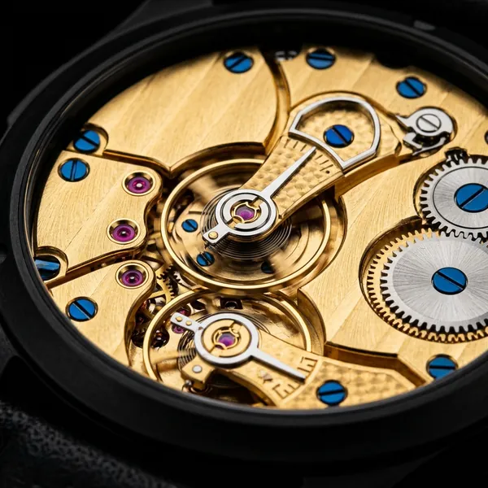
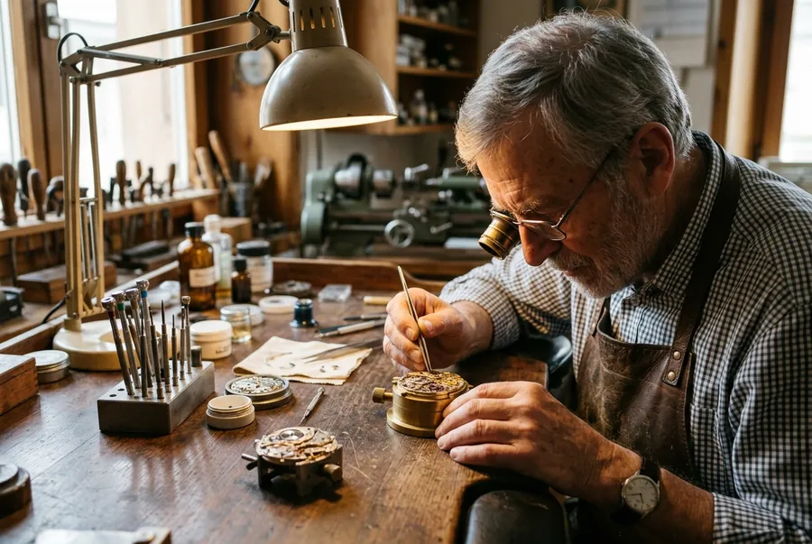
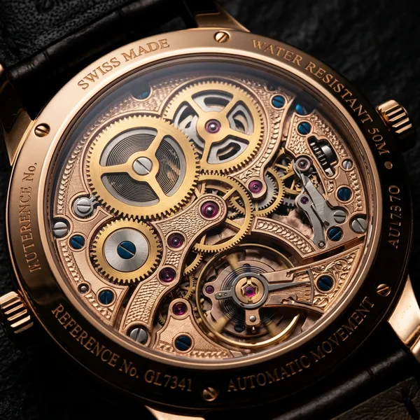

Heritage
The Birth of Swiss Watchmaking — 1601 to Today
How Huguenot refugees brought their jewellery skills to Geneva and sparked a revolution in mechanical precision that echoes across the centuries.
Heritage
How Huguenot refugees brought their jewellery skills to Geneva and sparked a revolution in mechanical precision that echoes across the centuries.

Guide
A collector's guide to the materials used in haute horlogerie — their properties, advantages, and why they matter to the long-term value of your timepiece.

Care
Storage, winding, waterproofing, magnetic fields, and servicing intervals — the definitive guide to keeping your mechanical calibre running for generations.

Technique
Invented to defeat gravity's effect on pocket watches, the tourbillon remains the pinnacle of watchmaker art. We explain how it works and why it matters.

Atelier
We spent 12 hours inside our Le Sentier atelier, documenting every step from raw alloy to finished calibre. The silence alone is worth the journey.

Collecting
Not all fine watches appreciate equally. Based on 30 years of auction data, these are the calibre complications that collectors should seek.